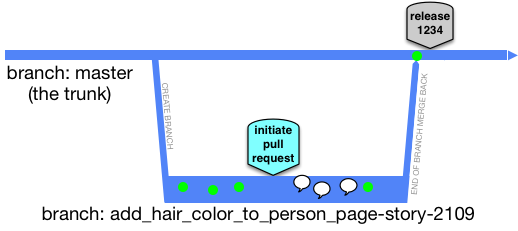

Alternative branching models
Branch: only when necessary, on incompatible policy, late, and instead of freeze
— Laura Wingerd & Christopher Seiwald (1998’s High-Level SCM Best Practices white paper from Perforce)Modern claimed high-throughput branching models
GitHub flow
This is sooooo close to PR-centric Trunk-Based Development. Why? Because it is a branching model that has individual developers active concurrently in more than one (short-lived) branch (or fork). Or developer pairs, rather than individuals.
The crucial difference is where the release is performed from.
The GitHub flow thing showing a release-from-branch step, before the merge back to the master (trunk):
(key)
One problem with is the small risk of regression in the following release - that would be if the release goes out, but the branch is never merged back. Another is that it may indeed not have items in it from the trunk that were part of a previous release (actually causing a regression).
As the GitHub documentation portrays, review comments are part of the process. They are the speech bubbles in timeline above followed by another commit, which presumably addressed the review feedback.
How Trunk-Based Development modifies the GitHub Flow model:
 (key)
After the dust has settled, and the short-lived feature branch has been deleted, the commits are not smushed together in a bigger one (as would be the case Subversion and Perforce), they instead zip into their respective places in the commit history, which is not as linear as we present here:
(key)
Of course, if you rebase/squash your series of commits, they could land in the trunk as a single commit. Also note that the review commentary is still available after the branch is deleted, as it should be.
See the GitHub Flow landing page for more
GitFlow and similar
Git Flow is incompatible with Trunk-Based Development.
There are plenty of people in the modern age that swear by this model, and feel it has plenty of room to scale with few downsides. It is a branching model that has groups of developers active concurrently in more than one branch (or fork).
 (key)
(key)
- Diagram copied from Vincent Driessen’s 2010 article on GitFlow: “A successful Git branching model"
It looks like you’ll not be able to do concurrent development of consecutive releases with this branching model, or the hedging that Feature Flags and Branch by Abstraction enable.
Legacy branching models
More than one trunk
This seems OK, but has many pitfalls. Consider not doing this model.
Some have a single repository with many trunks (and many branches - release or not). That is not uncommon with VCS choices that do not have an upper limit on size (including history). You are at least allowing for atomic commits across many of those trunks, which can happen if you have a large refactoring, and atomic commits are always desirable.
root/
module_one/
branches/
rel_1.0.0/
rel_1.1.0/
trunk/
build_file.xml
src/
# prod source directory tree
# test source directory tree
module_two/
branches/
rel_1.0.0/
rel_1.1.0/
trunk/
build_file.xml
src/
# prod source directory tree
# test source directory tree
module_three/
branches/
rel_1.0.0/
rel_1.1.0/
trunk/
build_file.xml
src/
# prod source directory tree
# test source directory tree
Many trunks becomes undesirable if you have lock-step release (same cadence) for all the separate trunks in the repo, and for all of those you are ‘branching for release’. You have made it harder for the larger thing to be build from root. Better would be one trunk with three modules, and a recursive build system, or one of the modern directed graph build systems like Buck or Bazel:
root/
branches/
rel_1.0.0/
rel_1.1.0/
trunk/
module_one/
build_file.xml
src/
# prod source directory tree
# test source directory tree
module_two/
build_file.xml
src/
# prod source directory tree
# test source directory tree
module_three/
build_file.xml
src/
# prod source directory tree
# test source directory tree
This way at least, you get to make one branch representing the release (with cherry-picks to it as bugs are eliminated).
Even if you have different release cadences, you can still engineer a trunk this way, you just have to have a build system that can reduce to the modules being tested and deployed, skipping those that won’t be. See Monorepos and expanding and contracting monorepos.
Mainline
Mainline is diametrically opposite to Trunk-Based Development - do not do this.
Mainline is a branching model that was promoted for ClearCase implementations. It is the principal branching model that Trunk-Based Development opposes. Mainline is a branch that will last forever✱. Off that, branches are formed for teams to do development work on. When that work is complete, a release may happen from that branch, and there is a big merge down to the mainline. On the way to the release, the branch may be frozen.
So here is the intention, with Mainline:
(key)
When bugs inevitably happen:
(key)
Whenever there is a bug fix there has to be a merge down to the mainline afterward. There’s no ‘wrong’ in this modified branch diagram, but you should be able to guess what the worst case branching/merging scenario is. In case you cannot:
(key)
Merges for the above
- Release 1.1 team persuades the release 1.0 team to bring something back to Mainline early (and incomplete) before they cut their branch
- Release 1.1 team merges the release 1.0 work upon apparent completion
- Release 1.0 team merges post-release bug fixes back to Mainline, and cross their fingers that the 1.0 branch can truly die now
- Release 1.2 team persuades the release 1.1 team to bring something back to Mainline early (and incomplete) before they cut their branch
- Release 1.1 team merges from Mainline, to pick up #3
- Release 1.2 team merges the release 1.1 work upon apparent completion
- Release 1.1 team merges post-release bug fixes back to Mainline, and cross their fingers that the 1.0 branch can truly die now
- Release 1.2 team merges from Mainline, to pick up #7
All of these compromises versus the planned “consecutive development of consecutive releases”. In many cases, it is worse, particular when the numbers of developers go up.
One key thing to note, versus Trunk-Based Development, teams doing the Mainline branching model, almost never do cherry pick merges for any reason. Instead, they are doing a “merge everything which is not merged already” kind of merge. Minimalistically the VCS they are using should have “merge point tracking”. At the high end, that should include “record only” merges, and normal merges even after that.
✱ Companies that choose ‘Mainline’ wither and die, we claim, so there is no forever.
Merges
After the release, the code will be merged back en masse to the mainline. Those merges may be hard and lengthy. It could be that the team took merges from mainline part way through the project. It could also be that the team pushed merges to mainline part way through the project.
How many branches?
We’ve just described a two branch model - the mainline and a project branch. It could be that the application in question has more that one project in flight at any one time. That would mean more than one project branch, and that creates pressure for more intermediate merges, and consequentially greater merge difficulty.
Always release ready?
Not on your life! Planned work needs to complete, with estimates guiding when that will be. Defects need to be eliminated, formal testing phases need to kick in. Here we take the first branch diagram, and overlay red and orange and green to show known build-breaks, build passes missing automated tests will not catch hidden defects, and green for could go live. At least for the worst performing with missing or ineffectual automated testing run in the CI pipelines:
(key)
Cascade
Cascade is incompatible with Trunk-Based Development - do not do this.
The idea is that each release has its own branch and that each release team merges from the ‘upstream’ branch daily. They only do so if the CI server says the build is green for the upstream, of course.
(key)
Problems compound with this model, the more releases being juggled concurrently there are. An upstream butterfly is a downstream Tsunami of unmergability. Downstream merges begin to get skipped, or abandoned. Or the merge works, but the code is not right so there is some in-branch fixing, which is not applicable to upstream. Here’s the reality (breakages overlaid again):
(key)
Remember, the merges are never cherry-picks in this model - they are sweeps of everything not merged yet (or up to an chosen commit number in order to make it more bite-sized).
Of course only larger organizations have to worry about the concurrent development of consecutive releases, and many would argue that the application is too large anyway (and that microservices are the solution).
CI (dis)proof of your branching model
Here’s an idea. Configure your CI Server to focus on every branch, regardless of branching model. Specifically to do per-commit builds, and do that speculative merge analysis described in game changers.
If everything is green everywhere, then you’re in a position to always be release ready, but very few teams are going to see green instead of red for this CI server enthusiasm
References elsewhere
show references